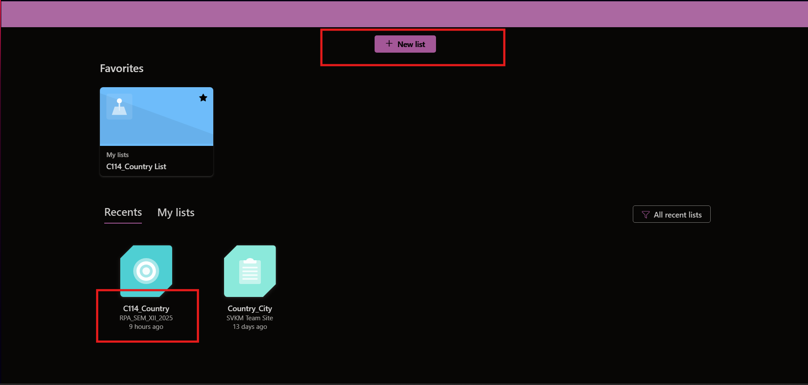
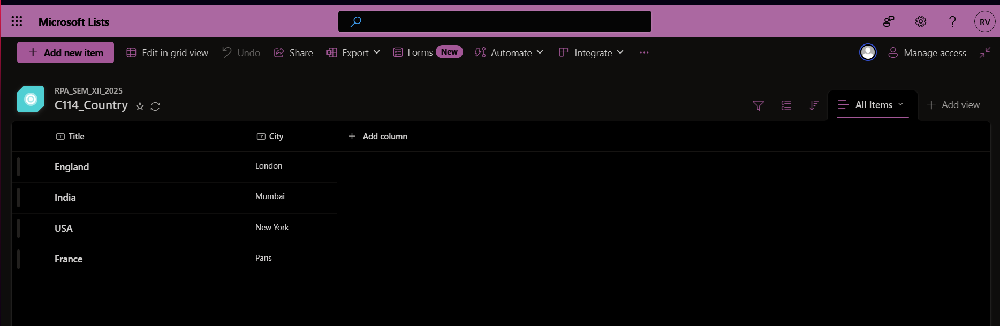
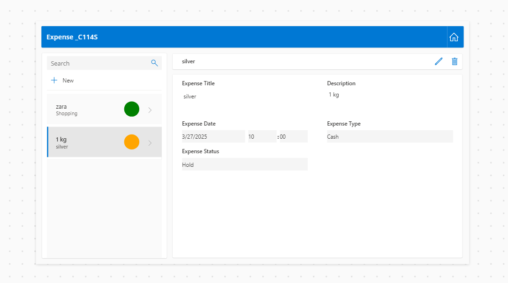

RPA
Create a Power Apps application showcasing login functionality with validation.¶
login-screen-1.txt
login-screen-2.txt
Create a SharePoint List and Implement Cascading Dropdowns in Power Apps¶
Create a new list in SharePoint under the team RPA Sem 12
📌 Code Reference:
cascading-dropdown.txt

The list should look similar to this:

Power Apps Configuration¶
- Connect the SharePoint List
- Open Power Apps → Create a Canvas App
-
Connect to the "LocationData" SharePoint list
-
Add Cascading Dropdowns
- Country Dropdown (
ddlCountry)
Distinct(LocationData, Country) -
City Dropdown (
ddlCity)
Filter(LocationData, Country = ddlCountry.Selected.Result).City -
Add Personalization (Bottom-Left Corner)
- Add a Label
- Set
Textto:
"Welcome, " & User().FullName
Create a Canvas app that demonstrates how to use local and global variables.¶
Create an expense tracker app for Microsoft teams and publish it in the team channel¶

-
Set Up Data
- Use Microsoft Lists, SharePoint, or Dataverse.
- Add columns: Expense Name, Amount, Category, Date, Status (Hold/Approved/Rejected), Submitted By.
-
Create the App in Power Apps
- Connect to your data source.
- Power Apps will auto-generate the form.
-
Customize the Form
- Modify fields for better usability.
- Use this formula for status color coding:
Switch( ThisItem.'Expense Status', "Hold", Color.Orange, "Approved", Color.Green, "Rejected", Color.Red )